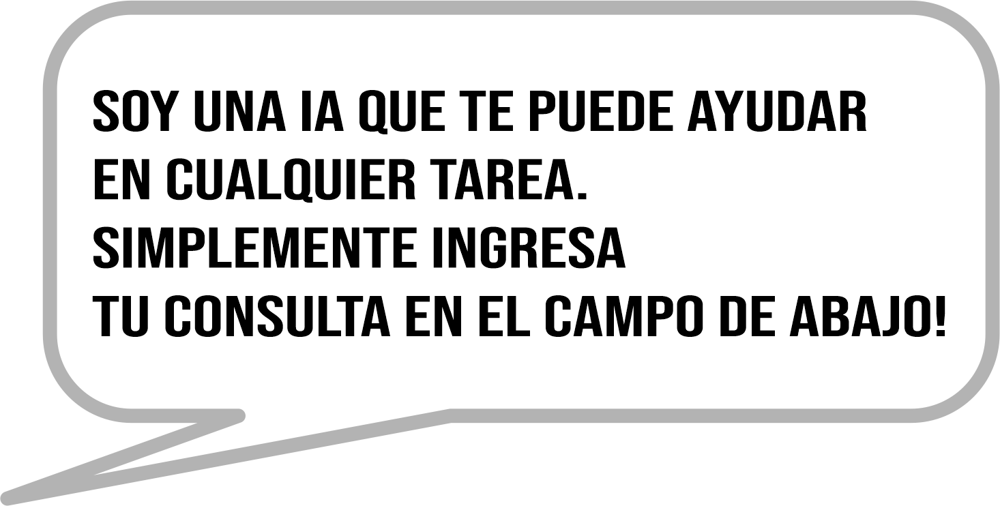

<section>
        <div id="ai_div">
            
            <div id="title_div">
                <!-- animated icons -->
                <div id="icons_wrapper">
                    <!-- main one -->
                    
                    <!-- displayed when the main one is hovered -->
                    
                </div>
                <!-- title -->
                <h3> ASISTENTE IA </h3>
            </div>
    
            
            <div id="question_div">  
                <!-- general questions - text input -->              
                <div class="wrapper">
                    <p for="input_ia">Ingresa tu consulta: </p>
                </div>
                <!-- button that triggers the request -->
                <div id="input_div">
                    <input type="text" id="input_ia" [(ngModel)]="prompt">
                    <input type="button" (click)="onUserInput()" value="OK" id="ok_btn">
                </div>
            </div>

            <div id="image_feedback_div">
                <!-- description -->
                <p>preguntale a la IA que opina de tu cultivo!</p>
                <!-- enables the user to select image -->
                <input type="file" (change)="getFile($event)" id="select_img_btn">
                <!-- displays the selected image -->
                <!--  -->
            </div>

            <div id="wait_response">
                <p>Respuesta de la IA (puede demorar unos segundos):</p>
                <button id="text_to_speech">
                    
                </button>
            </div>
    
            <div id="response_div">
                <!-- process the response once the async request is finished -->
                <p>La respuesta se mostrara aquí</p>
                <div *ngFor="let results of questions">
                    <p>{{results.result | sanitizeTextPipe}}</p>
                </div>
            </div>
    
        </div>
    
</section>
